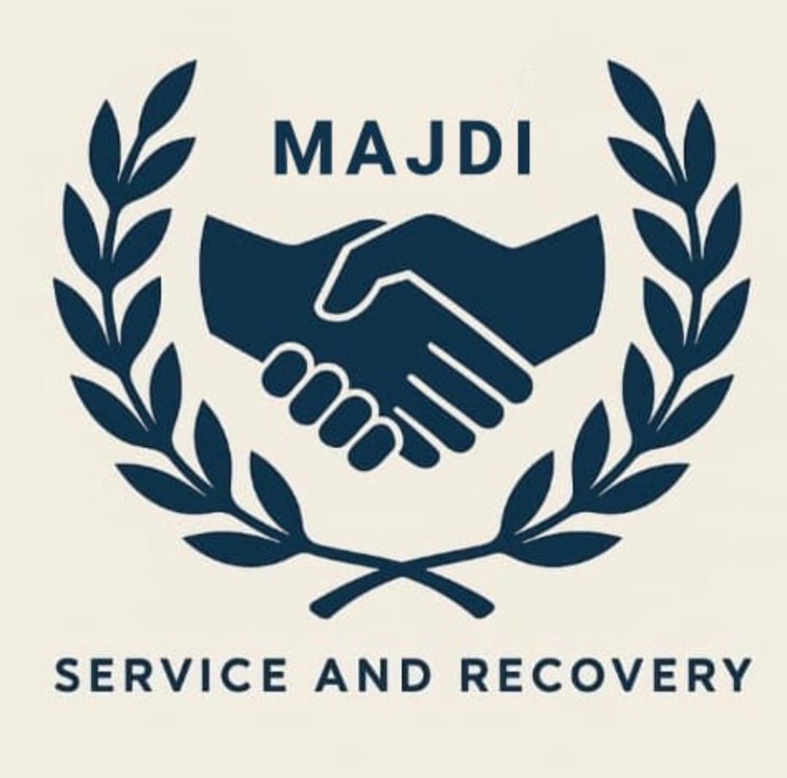

Unity. Service. Recovery. Prosperity.
After a life of abuse by those close to me and the political system in Zimbabwe, I applied for and got South African citizenship. This resulted in me being being told to leave the Zimbabwe, without any plans. I settled in Polokwane and after a three year struggle, found me feet. Some time later, I faced a legal and custody battle with Zimbabwe which, resulted in my adopting my daughter. The covid pandemic had me seek legal advice and I put muself on debt-review. In 2023, I decided to move to Cape Town. The struggles faced by being an unemployed, broke, 54 year old man on debt review, with a child, changed my perspective - it changed me.
My mission, it to meet people who can inspire, support and uplift each other. Because the government, is not going to do that - geez, the politicians don't even care.